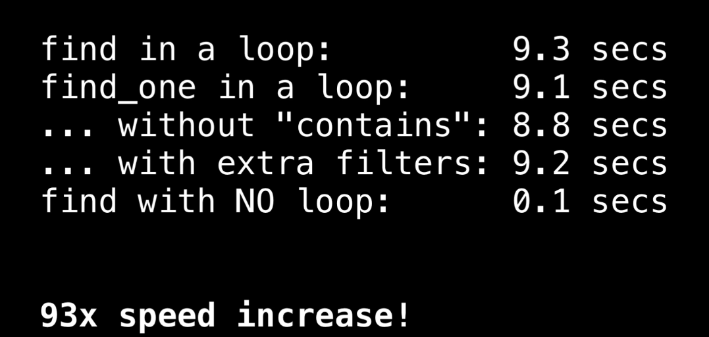
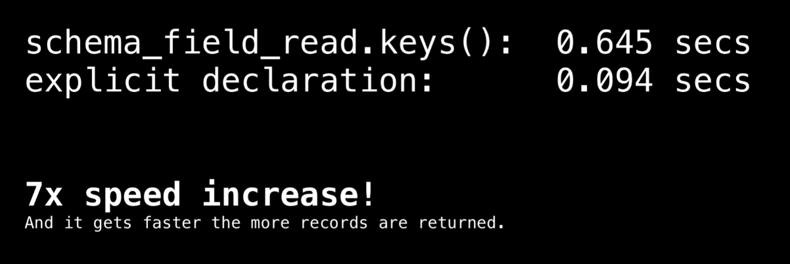
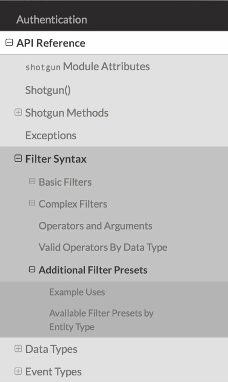

Python API—모범 사례
이제 Shotgun API를 사용할 준비가 되었으니 Shotgun 팀이 수집한 모범 사례를 살펴보고 API 실력을 높여 보십시오.
개발자는 Shotgun Python API를 사용하여 엔티티를 생선, 검색, 업데이트 및 삭제 합니다.
파일을 업로드 및 다운로드하고 샷건 사이트 데이터베이스 스키마를 변경합니다.
API를 사용하여 반복 작업을 자동화할 경우 엄청난 양의 인적 작업이 절약될 수 있지만 API를 잘못 사용하면 몇 시간 또는 며칠이 걸리는 스크립트를 작성할 수도 있습니다.
Clogging up bandwidth at your studio creating an unwieldly Postgres database and decreasing performance on your shotgun site. 스튜디오에서 대역폭을 클로징하면 Postgres 데이터베이스가 생성되고 샷건 사이트에서 성능이 저하됩니다.
개발자가 흔히 저지르는 실수 및 추가 전략을 통해 API를 최대한 활용할 수 있습니다.
보일러 플레이트 CLI
best_practices.py 만듭니다.
# coding:utf-8
import os
import sys
import logging
import argparse
from datetime import datetime
_DESCRIPTION = "This script runs various tests to demonstrate efficent use of the Shotgun Python API."
def _run(args):
"""
A boilerplate function to add code to.
:param args: Arguments that control script behavior.
"""
logging.info("Running.")
def _set_up_parser():
"""
:return: dict of args.
"""
# Initialize a command-line argument parser.
parser = argparse.ArgumentParser(
description=_DESCRIPTION
)
# Add an argument to the parser.
parser.add_argument(
"-r",
"--run",
help="Run this script.",
action="store_true",
required=False,
)
# Script out script usage if no arguments are passed.
if len(sys.argv) < 2:
logging.info("Usage: {} --help".format(__file__))
sys.exit()
# Resolve parser arguments.
return vars(parser.parse_args())
def _set_up_logging():
"""
Creates logs directory and sets up logging-related stuffs.
"""
# Create a logs directory if it doesn't exist.
if not os.path.exists("logs"):
os.makedirs("logs")
# Create a date stamp var for stamping the logs.
date_stamp = datetime.now().strftime("%Y_%m_%d_%H-%M-%S")
log = os.path.join(
os.path.dirname(__file__),
"logs",
"{}_{}.log".format(
os.path.basename(__file__).rpartition(".")[0],
date_stamp
)
)
# Set the logging level.
logging_level = logging.DEBUG
logging.basicConfig(
filename=log,
level=logging_level,
format="%(levelname)s: %(asctime)s: %(message)s"
)
logging.getLogger().addHandler(logging.StreamHandler())
if __name__ == "__main__":
# Initialize our logger and create related folders/files.
_set_up_logging()
# Parse our user input and toss it in a dict.
args = _set_up_parser()
start = datetime.now()
_run(args)
logging.info(
"_run function took {} to complete.".format(datetime.now() - start)
)
best_practies.py -r 실행 하면 로고 파일이 만들어 집니다.
기본적인 실수
샷건에 접속 한번만 한다.
배치 커멘드
동일한 프로젝트를 반복해서 쿼리하거나 인증하고 샷건을 연결하는 등의 중복 API 호출을 방지하여 작업 속도를 크게 높일 수 있습니다.
또한 우리의 요청 명령을 목록으로 모아 배치 명령을 한번에 샷건에 보내면 속도가 크게 향상될 수 있다.
sg = shotgun_api3.Shotgun(URL, login=USER, password=PASSWORD)
project = sg.find_one("Project", [["name", "is", "project X"]])
batch_data = []
for shot in range(1, 100):
shot_name = "sh{}".format(str(shot).zfill(3))
batch_data.append({
"request_type": "create",
"entity_type": "Shot",
"data": {
"code": shot_name,
"project": project
}
})
sg.batch(batch_data)
find_one 명령

이벤트 로그 감소
잘 짜여진 스크립트라 해도 베치 명령어를 사용하면 수행되는 작업 만큼 이벤트 로고가 생성 됩니다.
이는 시스템을 느리게 할수 있습니다.
커스텀 로그 이벤트 엔티티를 만들어서 베치 명령이 하나의 이벤트로 처리 하게 하면 이를 방지 할수 있습니다.
이벤트 로그 엔티티
이벤트 로그 테이블이 일반적으로 샷건 사이트에서 가장 큰 데이터입니다. 샷건 사이트를 오래 사용할수록 더 많은 이벤트 로그 항목이 반환될 수 있습니다. 이벤트 로그 항목을 최후의 수단으로만 질의하는 것입니다.
샷건의 이벤트 로고를 검색 해서 무언가를 해야 한다면 (특정 날짜의 필드 상태 파악) 한다면 샷건 데몬을 활용한다.
shotgunEvents는 제목의 shotgun software Github repo에서 찾을 수 있을 것이다.
데몬은 샷건 이벤트 로그를 감시하며 특정 이벤트가 발생할 때 조치를 취할 수 있습니다.
That way scripts run proactively instead of retroactive Lee and the event log entry queue strategy is optimized. 이러한 방식으로 스크립트가 소급해서 실행되지 않고 사전에 이벤트 로그 입력 대기열 전략이 최적화됩니다.
나는 또한 당신이 sg-cron-datapoint 이라고 불리는 리포를 체크할 것을 권한다.
이 repo의 스크립트는 crontab 또는 다른 프로세스 스케줄러를 통해 매일 밤 사용자 정의 엔티티에 데이터 지점을 쓰도록 구성할 수 있습니다.
At that point it's a simple matter to hit that custom data point entity to generate historical data crafts or reports. 그 시점에서는 사용자 지정 데이터 지점 엔티티를 타격하여 기록 데이터 기술 또는 보고서를 생성하는 것이 간단한 문제입니다.
schema_field_create
엔티티 유형에 특정 필드가 있어야 하는 스크립트를 작성하는 경우 API를 사용하여 해당 필드를 확인하고 필요에 따라 쉽게 추가할 수 있습니다.
이러한 API 검사 및 업데이트를 자동화하는 것이 좋은 생각인 반면 업데이트 작업은 한 번 또는 드물게 수행해야 한다는 것입니다.
한 함수에서 필드 유무 검사 -> 없다면 필드 생성 -> 업데이트 구조로 만들면 유무 검사를 해야 하므로 점검과 수정 사항을 별도의 설정 기능으로 분리하는 것이 좋습니다.
함수 _update_monkey_field 와 _set_up_schema 좋은 예 입니다.
find를 이용한 schema_field_read.keys()
While we're talking about schema calls I'm going to call out one of my pet peeve bad behaviors.
And I'm going to do that at the risk of introducing you to a bad habit.
As we already know when you query an entity in shotgun a minimal amount of information is returned the entities type and ID. 이미 알고 있는 바와 같이, 산탄총에서 엔티티를 쿼리할 때 최소한의 정보가 엔티티 유형과 ID로 반환됩니다.
If you want more information for example what the entity's name is you've got to look up the internal field code and specify that explicitly in he field commands third argument. 예를 들어 엔티티 이름이 무엇인 경우 내부 필드 코드를 찾아 필드 명령에서 세 번째 인수를 명시적으로 지정해야 합니다.
Now you clever people may have already found a shortcut which is this. 똑똑한 사람들이 이미 지름길을 발견했을지도 모릅니다.
You can simply pass in the keys from a schema field read call and voila. 스키마 필드 읽기 호출과 음성 변환에서 키를 간단히 전달할 수 있습니다.
shots = sg.find(
"Shot",
[["project", "is", "project X"]],
sg.schema_field_read("Shot").keys()
)
You get all the entities fields and field values in the payload. 페이로드에 있는 모든 엔티티 필드 및 필드 값을 가져옵니다.
shots = sg.find(
"Shot",
[["project", "is", "project X"]],
["code"]
)
특정 필드를 지정 해 봅니다.

필드를 명시적으로 선언하는 좋은 습관 입니다.
유용한 단축(Filter)
_shortcuts 함수를 보면 count를 사용합니다.
100개의 뎃글과 썸네일을 공유하는 예제 입니다.
샷건에 도입된 새로운 필터들을 보세요.
최신 사전 설정처럼 매우 유용한 것입니다.

설명서
마치기 전에 관련 지원 문서를 강조하고 싶습니다. 필터링에 대한 훌륭한 토론이 있습니다.
아래 링크는 소스 코드 입니다.
https://github.com/shotgunsoftware/gists/blob/master/python_api/best_practices.py
And finally I'd like to mention that although sharing a shotgun connection object is a good strategy.
It's not currently thread-safe as of February 2018.
So don't share a connection object across threads.
Check out these lines in github to see if that's changed.